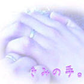

今日は昼寝日和だなぁ…。
ガラス越しに見えるゆっくりと流れる雲を目で追いながら、僕はそんな事を思っていた。
小春日和という形容ぴったりのぽかぽかした陽気の中で、何よりも愛しい彼女の手料理を食べ、こうしてソファーでうたた寝ができるのだから僕は本当に幸せ者だ。
昼食の後片付けをしてくれている彼女、茉莉がいるキッチンの方から聞こえてくる水音と、カチャカチャと食器が擦れ合う音が今日はやけに心地良く感じ、子守唄へとかわっていく。
僕は、まどろむ意識にあらがえずに眠りについた。
まどろむ中、右手に感じた温かさを不思議に思ってまだ重い瞼を薄くあける。
「ん…？」
「あ、ごめんね。起こしちゃった？」
謝っているのにもかかわらず茉莉の表情は笑顔で、僕もそれにつられて微笑み返す。
握られた右手から伝わってくる体温は、僕よりもほんの少し低い。
「んーん、大丈夫だよ。片付けご苦労様。いつもごめんね。水、冷たかったよね。」
彼女の手を取って謝ると、茉莉はちょっと困ったような笑顔で答えてくれた。
「ううん、平気。ねぇ、康ちゃん？私は“ごめんね”より“ありがとう”のほうが嬉しいな。」
「あ、ごめん。いつも“ありがとう”だね。それで、どうしたの？」
未だ離される事のない手を不思議に思って僕は尋ねる。
「んとね、康ちゃんの手は私のと違って、綺麗だなって思って見てたの。大きくて指が細長いなんてずるいなぁ…なんて。それにこうやって手をつないでるとね、なんかあったかくて安心するから。」
茉莉はそう、はにかみながら答える。
僕が茉莉のさらさらの黒髪を撫でると、彼女はさらに嬉しそうに微笑んでくれた。
「なるほど、そうだね。…あ。ねえ、茉莉はこんな話知ってる？」
「んー？」
「理科の話なんだけどさ。物質を構成している原子ってあるでしょう？
原子はね、何かと繋がっていないと、とても不安定なんだ。それだけで存在することはできないんだよね。大抵は、原子同士は繋がって存在してて・・・って、茉莉チャン。僕、笑えるような事言った覚えないんだけど…？」
「…ふふっ。ううん。違うの。また康ちゃんの講義はじまっちゃったなーって思って。
あ、でも聞きたくないわけじゃないんだよ？だから気にしないで続けて？」
ちょっと拗ねたくなったけど、話を途中でやめるのは何となく気が引けて僕は渋々話を続ける。
「えっと、どこまで話したっけ。ああ、そうそう。で、原子同士繋がると安定するんだよ。それってさ、僕ら人間と同じじゃない？」
「え。えと…んー？」
言葉の意味を理解しかねた茉莉は、眉間に皺を寄せる。せっかくの可愛い顔がだいなしだ。
「…つまりね、茉莉が一人で居なきゃいけない時ってあるじゃん。そういう時ってさ、寂しかったり不安になったりするでしょ。で、逆にこうやって僕とか茉莉の友達とか、誰かが一緒にいれば安心できるよね。ってこと。」
「あ、なるほどっ。そういう事ね。ふふっ、やっぱり学校の先生だね。例えが上手。そうだね、うん。難しいことはよくわからないけれど、私はこうしてると落ち着くなって思うし…そうかもしれないね。」
茉莉は微笑んで、繋いだ手を見つめる。僕はその仕草にどうしようもない愛おしさを感じて微笑まずにはいられなかった。
「ま、科学的な根拠があるわけでもないから、あくまで僕の勝手な考えだけど。たまには、そういうのもいいかなって思って。」
「…ふふ、なんか康ちゃんじゃないみたいだね。あーあ。私、お洗濯物干したかったんだけど、明日は雨かな。あ、それとも雪かな？」
なんてからかうから少し悔しくなって、こら、と彼女の頭を軽く小突いて体を起こした。
手を離してラグマットの上に座っている茉莉の正面に座ると、彼女は不思議そうな表情を見せて目でどうしたの、と訴えてくる。
答えずに彼女の左手をとって、僕は続ける。
「人も繋がれば安定するって、僕言ったよね？」
「うん、言ってたね。」
「だからね、」
と、言葉を切って。シャツの胸ポケットから取り出した指輪を茉莉の左薬指にはめれば、一連の動作を呆然と見ている彼女の姿。
それが、なんともおかしく愛おしく感じる。
「結婚、しませんか。」
と、そう告げた。
その後の茉莉の反応とか色々面白かったけどそれはまた今度話そうかな。